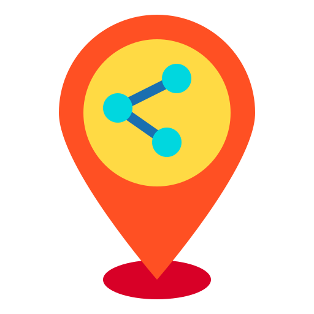

<!-- Toolbar -->
<div class="toolbar" role="banner">
   
   <span><b>Communere</b> share location test application</span>
   <div class="spacer"></div>
   <a
      aria-label="Share location github"
      target="_blank"
      rel="noopener"
      href="https://github.com/milad7290/share-location"
      title="Github"
   >
      
   </a>
</div>

<div class="content" role="main">
   <button (click)="onOpenShareView()" class="newAddress">
      <span>+</span>Share new location
   </button>
   <app-map></app-map>
</div>

<app-share-location-modal
   *ngIf="openShareModal"
   (onModalClosed)="onCloseShareView()"
></app-share-location-modal>

<router-outlet></router-outlet>
